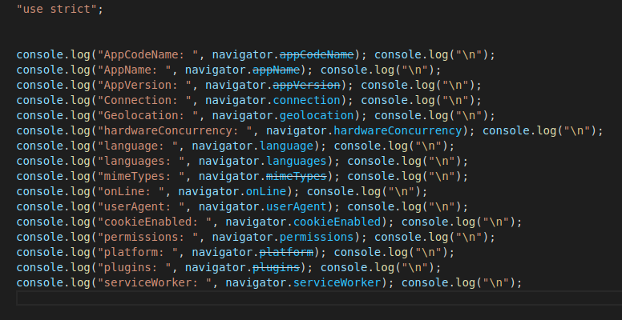

Lección 21 - Objeto Navigator
Definición: Api del navegador
Propiedades
- navigator.appCodeName Devuelve el nombre del navegador.
- navigator.appName Devuelve el nombre oficial del navegador.
- navigator.appVersion Devuelve la versión del navegador.
- navigator.connection Devuelve si el navegador esta conectado o no.
- navigator.geolocation Devuelve el objeto location que nos devuelve la posicion de donde estanos accediendo al navegador.
- navigator.hardwareConcunrrency Devuelve la cantidad de nucleos del procesador logico que hay disponibles.
- navigator.language Devuelve el lenguaje del navegador
- navigator.language Devuelve un array con los lenguajes que el usuario entiende o comprende
- navigator.mimeTypes Encabezados que se pueden enviar
- navigator.onLine Devuelve si estamos conectados o no a internet
- navigator.userAgent Devuelve información del navegador
- navigator.cookieEnabled Devuelve un booleano de si las cookies estan activadas o no
- navigator.permissions Devuelve un objeto permissions que nos permite acceder a cada unos los permisos del navegador (microfono, camara, notificaciones, ventanas emergentec, etc)
- navigator.platform Devuelve el tipo de disposito en el que estamos accediendo: MAC, WINDOWS, LINUX
- navigator.plugins Devuelve un array de plugins, que corresponde a los plugins instalados en el navegador
- navigator.ServiceWorker Es un worker que trabaja en paralelo pero que trabaja de manera distinta en la que trabaja los web workers
Metodos:
- navigator.getUserMedia() Solicita permiso para acceder a la camara y audio del dispositivo
- navigator.registerContentHandler() Permite a los web sites registrarse como posibles controladores de un tipo MIME determinado.
- navigator.registerProtocolHandler() Permite a los web sites registrarse como posibles controladores de un protocolo determinado.
- navigator.requestMediaKeySystemAccesss() Devuelve una promesa para un objeto MediaKeySystemAccess.
- navigator.javaEnabled() Nos devuelve si el navegador tiene Java habilitado o no.
- navigator.sendBeacon() Se usa para transferir de forma asincrona conjuntos pequeños de datos HTTP de usuario al servidor.
- navigator.vibrate() Causa vibración en el dispositivo que lo soporta.
Codigo:
